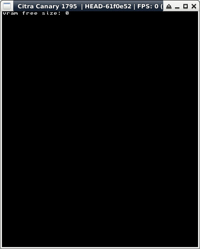

參考資訊：
https://hub.docker.com/r/greatwizard/devkitarm-3ds
main.c
#include <stdio.h>
#include <stdlib.h>
#include <string.h>
#include <3ds.h>
int main(void)
{
gfxInitDefault();
consoleInit(GFX_TOP, NULL);
uint32_t fsize = vramSpaceFree();
printf("vram free size: %d\n", fsize);
if (fsize > 128) {
int c = 0;
u16 *p = vramAlloc(128);
printf("vram ptr: %p (size: %d)\n", p, vramGetSize(p));
for (c = 0; c < 128; c++) {
p[c] = c;
}
for (c = 0; c < 128; c++) {
if (p[c] != c) {
printf("mismatch at 0x%x\n", c);
}
}
vramFree(p);
}
gspWaitForVBlank();
gfxSwapBuffers();
svcSleepThread(3000000000LL);
gfxExit();
return 0;
}
完成
